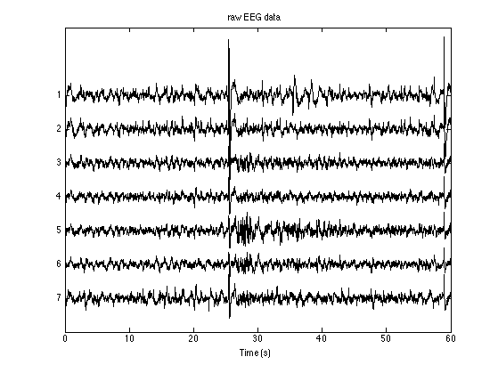
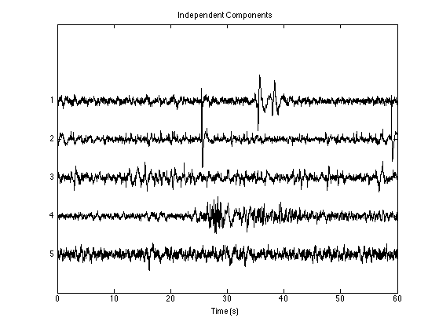
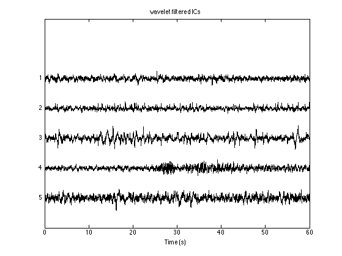
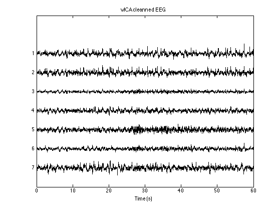

Example #2 showing the basic usage of wICA algorithm
For details see TestExample1. Data provided by: Yaseen Gerhold
Author: Valeri A. Makarov
e-mail: vmakarov@mat.ucm.es
http://www.mat.ucm.es/~vmakarov/index.html
Oct. 2012
Contents
Reset environment
clear all close all
Load and plot data
load('./Data/Test_Data_wICA.set', '-mat') Fs = EEG.srate; nChns = EEG.nbchan; Data = floatread('./Data/Test_Data_wICA.fdt',[nChns,Inf]); figure('color','w') PlotEEG(Data, Fs, [], 150, 'raw EEG data')
ICA of EEG
[icaEEG, A, W] = fastica(Data,'stabilization','off','verbose','off'); figure('color','w'); PlotEEG(icaEEG, Fs, [], 12, 'Independent Components'); xlabel('Time (s)')
wICA algorithm
nICs = 1:size(icaEEG,1); Kthr = 1.1; ArtefThreshold = 7; verbose = 'off'; icaEEG2 = RemoveStrongArtifacts(icaEEG, nICs, Kthr, ArtefThreshold, Fs, verbose); figure('color','w'); PlotEEG(icaEEG2, Fs, [], 12, 'wavelet filtered ICs'); Data_wICA = A*icaEEG2; figure('color','w'); PlotEEG(Data_wICA, Fs, [], 150, 'wICA cleanned EEG'); 